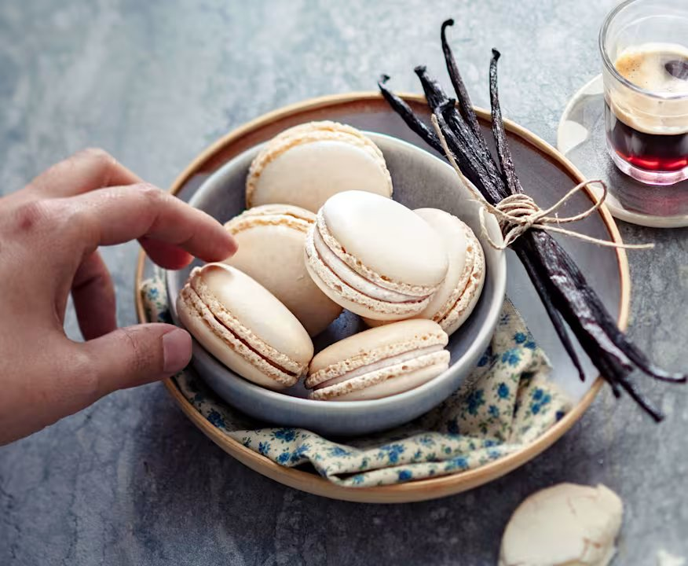

Macarons à la vanille
Ingredients
- 2 feuilles de gélatine
- 105 g de chocolat blanc
- 105 g de lait
- 1 gousse de vanille
- 160 g de mascarpone
- 150 g de poudre d'amande
- 300 g de sucre glace
- 100 g de blancs d'oeufs

Préparation
Étape 1
Ramollir 2 feuilles de gélatine dans l’eau froide.
Étape 2
Mettre 105 g de chocolat blanc dans le bol et hacher 5 sec/vitesse 8. Ajouter 105 g de lait et les graines d’1 gousse de vanille, cuire 7 min/80ºC/vitesse 2.
Étape 3
Ajouter la gélatine égouttée et mélanger 5 sec/vitesse 5. Laisser refroidir, incorporer 160 g de mascarpone à la spatule et laisser prendre 2h au frais. Nettoyer le bol.
Étape 4
Mettre 150 g de poudre d'amande et la moitié de 300 g de sucre glace (150g) dans le bol, mixer 10 sec/vitesse 10. Ajouter la moitié de 100 g de blancs d'oeufs (50g), mixer 8 sec/vitesse 5. Transvaser et nettoyer le bol.
Étape 5
Insérer le fouet. Monter le reste des blancs 3 min/37ºC/vitesse 3.5. Ajouter 75g de sucre glace, fouetter 4 min/37ºC/vitesse 3.5, puis le reste du sucre glace et fouetter 5 min/37ºC/vitesse 3.5.
Étape 6
Incorporer délicatement la meringue au mélange amande. À la poche (douille 8mm), pocher 40 disques de 2cm sur une plaque avec du papier cuisson. Laisser croûter 30min.
Étape 7
Cuire 15min à 150ºC. Laisser refroidir et décoller.
Étape 8
Garnir la moitié des coques de ganache et refermer avec les autres. Déguster bien frais.
Conseils
- Ganache réduite aux 2/3 de la recette d’origine (3 feuilles de gélatine, 160g de chocolat blanc, 160g de lait, 2 gousses de vanille, 240g de mascarpone).